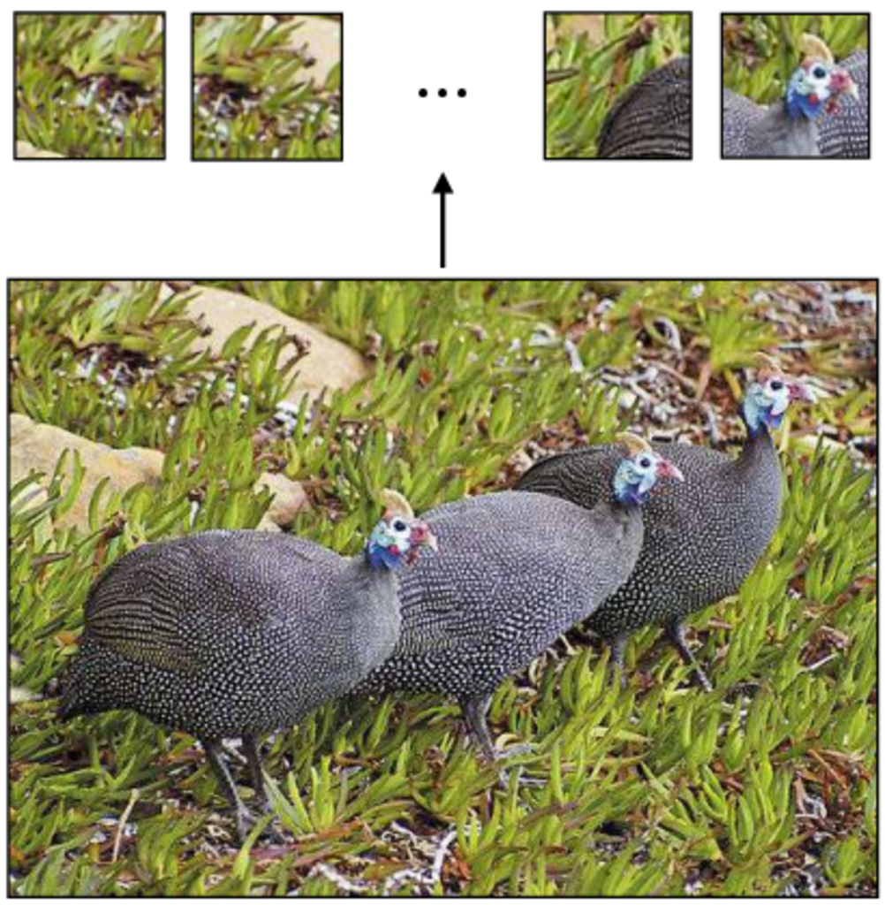
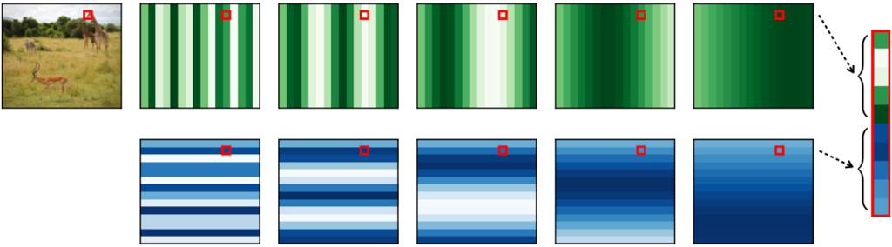

Transformers
Beyond Convolutional Networks with Attention
Foundations of Computer Vision
Introduction
Transformers are a family of architectures that generalize and expand ideas from CNNs.
Key innovations: - Tokens: Vectors as fundamental units (vs. individual neurons) - Attention layers: Mix information globally across all regions - Parallel processing: All patches processed together (like CNNs, not like RNNs)
Original work: Vision Transformers (ViTs) | Dosovitskiy et al. (2021)
The Core Idea: Attention
Intuition from human perception: - When looking at a scene, we attend to salient elements - We don’t process everything equally - We focus where needed
In neural nets: - Neurons on layer \(\ell+1\) “attend” to select neurons on layer \(\ell\) - Each neuron learns what to focus on based on the input
This is efficient—we compute what matters, not everything.
Introducing Tokens
Token = a vector-valued group of neurons (new data type)
- Traditional neural nets: scalars as individual neurons
- Transformers: vectors as fundamental units
Tokenization: Convert image patches to token vectors

Tokenization: converting patches to token vectors.
Each patch becomes one token. Full image = array of tokens.
Representing Tokens
Matrix notation: A sequence of \(N\) tokens, each \(d\)-dimensional:
\[\mathbf{T} = \begin{bmatrix}
\mathbf{t}_1^\mathsf{T}\\
\vdots \\
\mathbf{t}_N^\mathsf{T}\\
\end{bmatrix} \in \mathbb{R}^{N \times d}\]
Key insight: Tokens are to transformers as neurons are to neural nets.
- Neural nets operate on neurons (scalars)
- Transformers operate on tokens (vectors)
Token Operations: Mixing
Linear combination of tokens: Weighted sum of vector-valued tokens
\[\mathbf{T}_{\texttt{out}} = \mathbf{W}\mathbf{T}_{\texttt{in}}\]
Compare with neurons: \[\mathbf{x}_{\texttt{out}} = \mathbf{W}\mathbf{x}_{\texttt{in}}\]
The difference: Weights \(\mathbf{W}\) combine tokens (rows), not individual scalars.

Linear combination: neurons vs tokens.
Token Operations: Modifying
Per-token nonlinearity: Apply a nonlinear function to each token independently
\[\mathbf{T}_{\texttt{out}}[i,:] = F_\theta(\mathbf{T}_{\texttt{in}}[i,:])\]
Common choice: \(F_\theta\) is an MLP (learnable!)
Key difference from CNNs: - ReLU: no learnable parameters - Per-token MLP: rich, expressive nonlinearity
This makes tokens more powerful than scalar neurons.
Token Nets
Token nets = computation graphs with tokens as primary nodes
Like neural nets, they alternate: 1. Linear mixing layers (combine tokens) 2. Nonlinear transformation layers (per-token operations)
Key advantage: Tokens allow explicit global communication patterns.

Neural nets vs token nets.
Attention: Data-Dependent Mixing
Standard fc layer: Weights are fixed parameters
\[\mathbf{T}_{\texttt{out}} = \mathbf{W}\mathbf{T}_{\texttt{in}}\]
Attention layer: Weights depend on the input data
\[\mathbf{T}_{\texttt{out}} = \mathbf{A}\mathbf{T}_{\texttt{in}}, \quad \text{where } \mathbf{A} = f(\mathbf{T}_{\texttt{in}})\]
Why data-dependent? - Allocate attention to relevant regions - Different inputs → different attention patterns - Learned from data

Attention: data-dependent weights.
How Attention Works: Query, Key, Value
Three roles for tokens:
- Query (\(Q\)): “What am I looking for?”
- Key (\(K\)): “What am I?”
- Value (\(V\)): “What information do I contain?”
Attention computation: \[\text{Attention} = \text{softmax}\left(\frac{QK^\mathsf{T}}{\sqrt{d}}\right) V\]
Intuition: - Queries ask questions - Keys match queries (similarity score) - Values provide answers
Multi-Head Attention
Single head: One attention pattern per layer
Multi-head: Multiple attention patterns in parallel
- Head 1: Focus on colors
- Head 2: Focus on edges
- Head 3: Focus on texture
- …
Each head learns different aspects of the image independently, then combine.

Multiple attention heads capture different features.
Positional Encoding
Problem: Tokens are permutation-invariant (order doesn’t matter to transformer)
But: Image patches do have spatial order!
Solution: Positional encodings encode position information
\[\mathbf{t}_i' = \mathbf{t}_i + \mathbf{p}_i\]
where \(\mathbf{p}_i\) encodes the position of token \(i\).

Positional codes add spatial awareness to tokens.